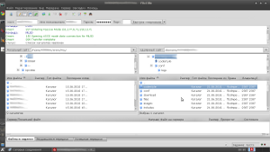
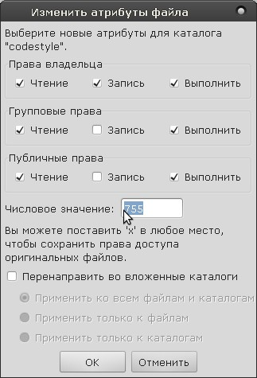
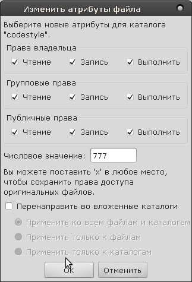
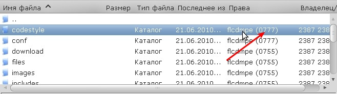
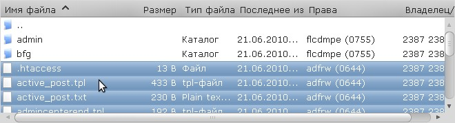
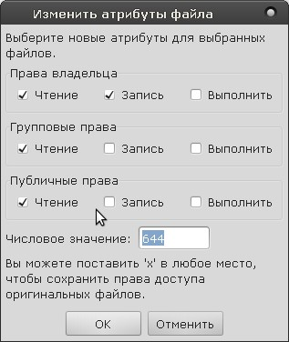
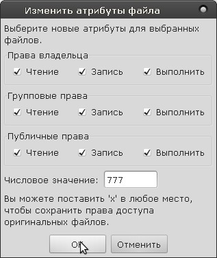
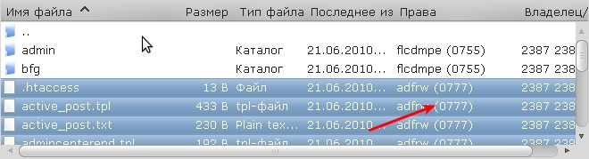

|
Установка прав на запись файлам и папкам
В данном руководстве я использую бесплатный кросс-платформенный FTP клиент FileZilla, но в других клиентах действия аналогичны.
Установка прав на запись папке:
1. Выделите нужный каталог (папку):

2. Выберите из контекстного меню (вызывается правой кнопкой мыши по папке) "Права доступа к файлу". У вас появится что-то вроде:

3. Установите числовое значение 777 и нажмите ОК:

4. И папка будет иметь права на запись:

Установка прав на запись файлам:
1. Выделите нужные файлы (или файл):

2. Из контекстного меню (вызывается, как уже было отмечено выше, правой кнопкой мыши) выберите "Права доступа к файлу". Появится знакомое окошко примерно следующего содержания:

3. Устанавливаем опять же числовое значение 777 и нажимаем ОК:

4. Нужные файлы теперь имеют права на запись:
